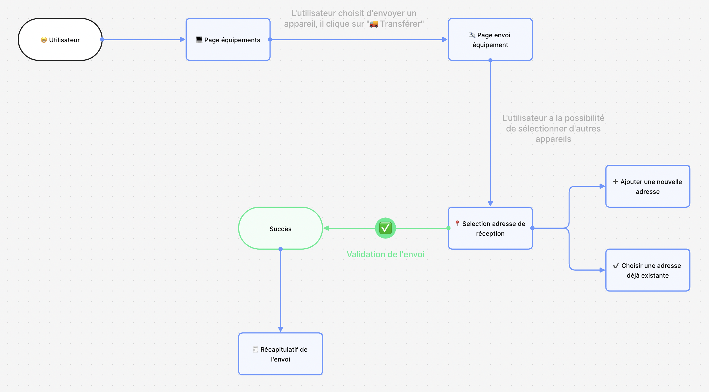
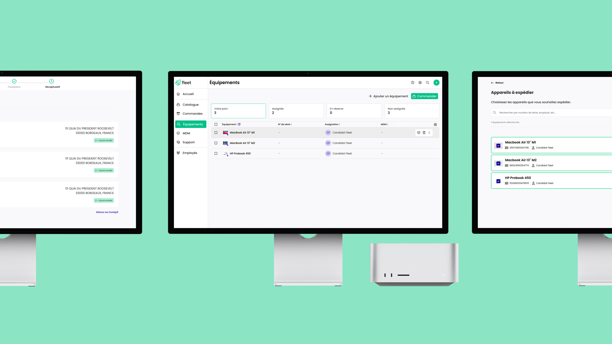

FLEET
PROJET
- UX Research
- UI Design
SOFTWARES
- Figma
- FlowMapp
DESCRIPTION
Ce cas d’étude a été réalisé pour l’entreprise Fleet, spécialisée dans la gestion de parc informatique pour diverses entreprises. Fleet offre à ses clients la possibilité de louer des équipements informatiques et de les gérer de manière efficace via leur plateforme en ligne. Voici la problématique : Le client a loué un ordinateur qui est actuellement stocké dans les bureaux de Paris, situés au 21 rue de Bruxelles. Un nouvel employé rejoindra l’équipe à Bordeaux dans 3 jours, mais il n’y a pas de stock disponible sur place. Le client souhaite utiliser une nouvelle fonctionnalité offerte par Fleet pour envoyer l’ordinateur de Paris à Bordeaux.
ANALYSE CONCURRENTIELLE
Avant tout, j’ai effectué une analyse concurrentielle pour comprendre les meilleures pratiques en matière de tunnels de vente. J’ai étudié plusieurs solutions existantes sur le marché pour identifier les fonctionnalités clés et les points d’amélioration. Cette analyse m’a permis de m'inspirer et de concevoir une solution optimale.
ANALYSE DE L'EXISTANT
Une étape essentielle a été l’analyse de l’interface existante de Fleet. Cette étape m’a permis de m’approprier l’interface actuelle et de réfléchir à la manière d’adapter cette nouvelle fonctionnalité de la manière la plus intuitive et pratique possible. Voici les principaux points abordés lors de cette analyse :
- Étude de l’Interface Actuelle : J’ai examiné en détail les différentes sections de la plateforme Fleet pour comprendre sa structure et son ergonomie.
- Intégration de la fonctionnalité : J’ai réfléchi à la manière d’intégrer la nouvelle fonctionnalité d’envoi d’équipement sans perturber l’expérience utilisateur existante.
- Emplacement Optimal : J’ai déterminé l’emplacement le plus pratique pour la nouvelle fonctionnalité afin qu’elle soit facilement accessible aux utilisateurs.
USE CASE
Pour répondre à la problématique du client, j’ai défini un use case précis, illustré par le diagramme suivant :
- Page Équipements : L’utilisateur commence par accéder à la page des équipements disponibles.
- Page Envoi d’Équipement : L’utilisateur choisit d’envoyer un appareil.
- Sélection de l’Équipement : L’utilisateur sélectionne l’ordinateur à envoyer.
- Sélection de l’Adresse de Réception : L’utilisateur peut soit ajouter une nouvelle adresse de réception, soit choisir une adresse déjà existante.
- Validation de l’Envoi : L’utilisateur confirme les détails de l’envoi.
- Succès : L’envoi est validé et un récapitulatif est généré.
MAQUETTE HI-FI SUR FIGMA
Pour illustrer cette fonctionnalité, j’ai créé une maquette haute fidélité sur Figma, en utilisant des composants et l’auto-layout pour garantir une interface utilisateur cohérente et responsive. J’ai intégré des éléments du UI Kit de Fleet pour assurer une continuité visuelle avec les autres parties de la plateforme.
CONCLUSION
Cette étude de cas démontre ma capacité à analyser des besoins clients, à concevoir des solutions optimales à travers des use cases bien définis et à réaliser des maquettes haute fidélité en utilisant Figma. Grâce à cette approche méthodique, j’ai pu créer une fonctionnalité qui répond parfaitement aux attentes de notre client et améliore l’efficacité de la gestion de leur matériel informatique.